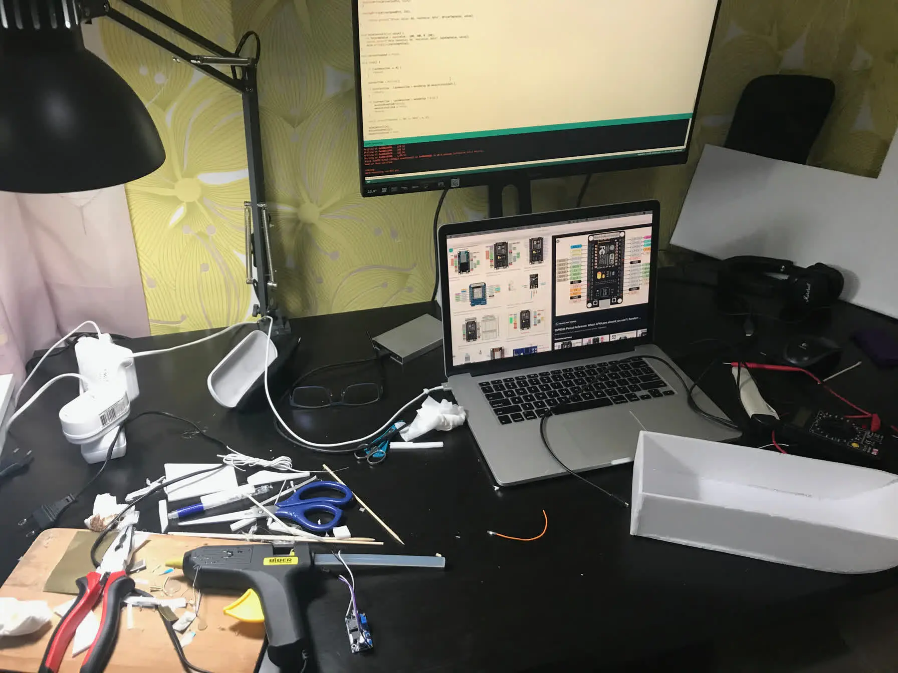
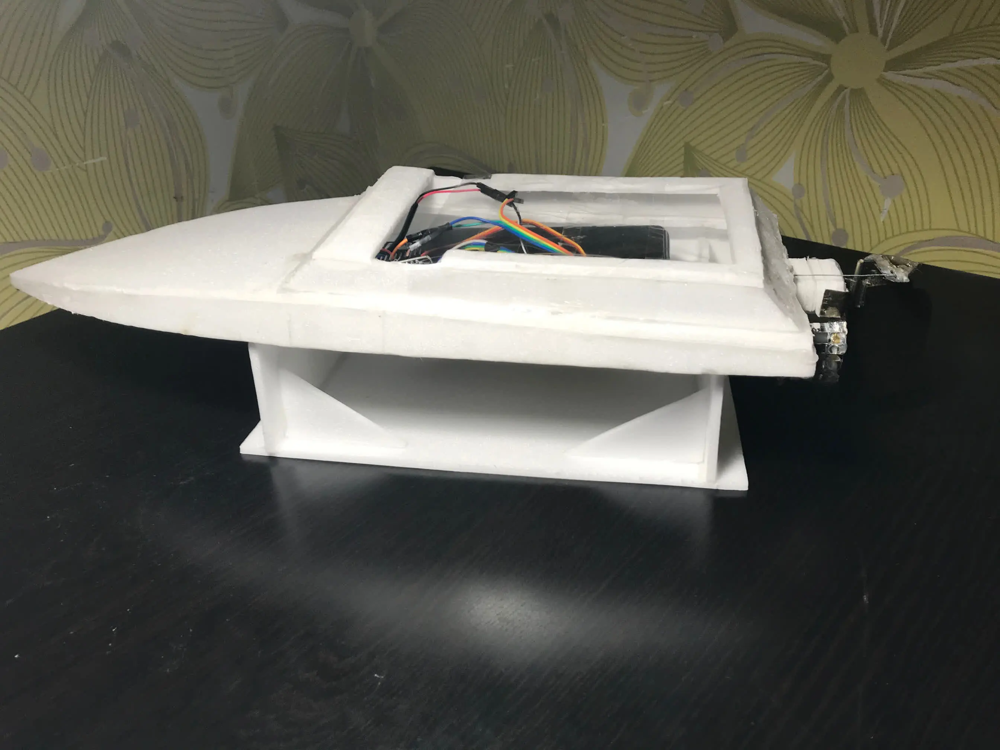

RC Boat with ESP8266 NodeMCU
origin: habr.com/ru/articles/513482

I’ll share the entire development process from the very beginning: starting with a boat made of ceiling tiles, a gel pen, and a tin can, to a plastic model that’s good enough to give as a gift.
You can check out the final result here:
Why?
Since childhood, I’ve always wanted to build a remote-controlled model. It didn’t matter what kind—what mattered was building it myself.
After discovering Arduino, I started exploring other controllers and came across the ESP8266 NodeMCU. After reading about it, I realized it could help me make this dream a
reality.
This started in March. My friend’s birthday was in the summer, so I thought I had plenty of time to build a boat and give it to him as a gift (spoiler: I was a month late).
He’s a fan of rivers and lakes, so choosing a water vehicle as the model was an easy decision.
What should the boat be like?
How I imagined the final model:
Electronic components:
- ESP8266 NodeMCU;
- SG90 servo motor for the rudder (simple and affordable);
- Brushless motor (fast and powerful);
- Power bank to power the motor and controller (easy to charge and usable for other purposes);
- 3 LEDs for debugging:
- Power supply to the controller
- Client connection to the WebSocket server
- Command received from the client
Materials:
- Ceiling tiles as the main hull material (easy to work with, inexpensive, and available at any hardware store);
- Epoxy (or something similar) to reinforce the hull later;
- Rudder made from tin (easy to work with and sturdy enough);
- Propeller shaft made from a bicycle spoke, a few bearings, and some tubing (a simple and cheap solution);
- Hot glue gun to assemble everything (because everything is better with a hot glue gun).
I wanted to control the boat from a smartphone, as it's convenient—always charged and readily available.
Remote Control Prototype 1.0
To start, I built a simple prototype using LEGO, parts from other Arduino projects, and a power bank.
On the ESP8266 NodeMCU, I set up:
- A Wi-Fi access point with a static IP address, allowing connection from a smartphone.
- An HTTP server:
- Served an HTML page with 5 buttons to control the car.
- Provided an API for controlling the car via the buttons on the HTML page.
Connection diagram

{kind=link}
Great, it works!
Remote Control Prototype 2.0
Controlling with buttons wasn’t very convenient, so I redesigned the interface to respond to touch in specific parts of the screen.
With this interface, frequent requests had to be sent to the server, so I added a WebSocket server on the ESP8266 NodeMCU to send commands over an established connection.
{kind=link}
{kind=link}
Control example

Detailed instructions on how to build such a car can be found here.
A Bit of Theory and Materials
Before diving into the details of creating the boat, I should briefly explain its components.
Image taken from here
{kind=link}
The main parts that I will be discussing are highlighted in blue:
1 - rudder;
2 - propeller;
3 - drive shaft;
4 - there should be a coupling here;
5 - motor.
Main materials that inspired me and were used
Books:
The most useful material I found was in the book by John Finch, "Advanced R/C Boat Modeling." I looked at other books, but this one was the best for me.
Articles:
Video course how to make a rocket boat
Testing Reception Range
To test the range of the control system, I built this device:
{kind=link}
{kind=link}
On the client side, you can run a ping/pong test to the WebSocket server with response time measurement.
The table displays the number of requests/responses and the response time percentiles.
After walking around the park with direct line of sight, I found that the maximum distance I could maintain a reliable connection between the device and my smartphone was about 27
meters (I later checked the distance on the map).
27 meters: 95th percentile ~ 48 milliseconds, 99th percentile ~ 283 milliseconds.
Client interface for testing reception range
{kind=link}
Here is the link to get the code and run the experiment yourself.
Version 1.0
Electronic components:
- ESP8266 NodeMCU;
- L298N;
- SG90 Servo;
- TT130 brushed motor;
- powerbank;
- three-color LED.
Materials:
- Ceiling tile for the hull;
- Rudder made from a can;
- A drive shaft made from a gel pen and wooden skewer, glued with a hot glue gun;
- Propeller bought on AliExpress.
Version features:
- The rudder is placed very close to the hull of the boat;
- The angle of the main shaft relative to the hull is quite large, and the drive shaft goes under the bottom of the boat;
- The drive shaft leaks badly.
I already had a working remote control scheme, so I could start working on the hull.
To assemble the boat's hull, I used blueprints from an article by Francisco Moliner.
I printed them, glued them together, and cut them out of ceiling tile.
{kind=link}
While I was assembling the hull and thinking about what to make the drive shaft from, my brushless motor A2212 1000KV arrived.
In my inexperience, I ordered a motor for drones:
- Not only the motor shaft spins, but the whole motor rotates relative to the base (how to mount it to the boat?);
- A specific motor controller.
I struggled with this motor for a week.
I managed to start the motor, but when the voltage changed quickly (rapidly increasing or decreasing speed), the motor would turn off and the controller would restart.
I think this was due to the low power of the power supply (the powerbank).
In the end, I decided to switch to a more powerful brushed motor.
Trying in vain to set up stable motor operation
{kind=link}
Assembly is in full swing

{kind=link}
First test launch
I realized that I could make a good prototype, but it wouldn't look presentable.
I decided it was time to order a 3D printer, which I had wanted to try for a while.
Version 1.1
Version features:
- Added a roof to prevent water from getting into the boat from the top (still sealed the top with tape during tests);
- Moved the rudder a bit away from the hull to improve control;
- Reduced the tilt angle of the main shaft to increase the boat's power;
- The drive shaft is made from a gel pen, an umbrella rod, and technical oil (almost no leaks);
- Replaced the L298N with an L298N mini (smaller size, no significant difference in this version);
- The boat's speed is not adjustable;
- The new R280 motor (3-12v, 5000-15000 rpm) is much more powerful than the previous one.
To control the motor speed, I used the L298N, but lost almost half of the power.
This is a feature of using PWM or the way the circuit is designed — I'm not exactly sure.
I decided to abandon speed control. In the end, I used the L298N, but without PWM control, which significantly increased the motor power.
First Launch
Unfortunately, I chose the closest pond, which was very overgrown.
After swimming just one and a half meters, the boat tangled weeds around the propeller shaft and stopped responding to control.
After ten minutes, using a few branches taped together into one large one, we managed to retrieve the boat from the water.
Here are the first photos of the boat, but after that swim:
{kind=link}
It's easy to see the positions of the rudder and the propeller
{kind=link}
You can see how the weeds tangled around the shaft
{kind=link}
The boat still leaked a bit, so I had to search for the leak.
The blue goo is clearly visible on the white background

Version 1.2
Version features:
- Installed a protection for the propeller from weeds;
- Increased the surface area of the rudder;
- Changed the pond.
The boat, cleaned of dirt, looks much better

{kind=link}
The rudder surface area is increased
{kind=link}
{kind=link}
First successful launch:
Version 1.3
Version features:
- The boat's length was reduced by half.
Suddenly, I realized that the boat would require a lot of plastic, so I decided to make it a bit shorter.
To see how the shortened version would look, I redesigned the existing hull.
Version 2.0
Electronic components:
- ESP8266 NodeMCU;
- L298N;
- Servo SG90;
- Brushed motor R370 3-12v 10000-41000 rpm;
- Powerbank;
- Three-color LED.
Materials:
- Ceiling tile for the hull;
- Plastic rudder;
- Plastic shaft, umbrella rod, and bearings for the shaft.
Version features:
- Designed and 3D printed the rudder, shaft, and coupling;
- Used a new motor R370 3-12v 10000-41000 rpm;
- Moved the propeller and rudder further from the boat;
- Assembled the hull with new dimensions;
- Removed the propeller algae guard.
The 3D printer arrived!
The package from China arrived in perfect condition
{kind=link}
The assembly process took about 6 hours
{kind=link}
{kind=link}
Printing the shaft and coupling

{kind=link}
{kind=link}
It works great!
It was unclear what to do with the hole where water was getting in:
{kind=link}
{kind=link}
Version 3.0
Electronics components:
- ESP8266 NodeMCU;
- L298N;
- Servo SG90;
- Brushed motor R370 3-12v 10000-41000 rpm;
- Powerbank;
- 3 LEDs.
Materials:
- Plastic body;
- Plastic rudder;
- Plastic shaft, umbrella rod, and technical oil for the drive shaft.
Version features:
- The entire body is made of plastic.
Before this, I had only worked in Kompas 3D for modeling simple designs, but the principles in Fusion360 are quite similar. I had to spend a few weekends learning how to optimize modeling in this program. After a couple of weeks, the first usable version of the boat body model was ready!
{kind=link}
{kind=link}
{kind=link}
{kind=link}
I divided the body into several parts and started printing.
I didn’t focus much on the printing settings, so the quality isn’t great.
{kind=link}
{kind=link}
{kind=link}
{kind=link}
{kind=link}
{kind=link}
{kind=link}
{kind=link}
Completed body

Additionally, I modeled and printed the rudder. I solved the issue with the hole for controlling the rudder (visible in the photo). As a result, water almost stopped entering the boat through it.
{kind=link}
{kind=link}
{kind=link}
{kind=link}
Replaced one RGB LED with three different LEDs
{kind=link}
The new motor occasionally didn't start on the first try, which was really frustrating. I thought this might be due to the power supply (powerbank), so I experimented with regular AA batteries, which seemed to improve things.
Experimenting with AA batteries
{kind=link}
Then I suddenly realized that the powerbank probably contains multiple batteries, and I might be able to connect them in the way I need. So, I opened up the powerbank... but it turned out there was only one battery inside.
Only one battery inside the powerbank
{kind=link}
So, I decided I needed to order some batteries.
Version 3.1
Version features:
- Replaced the powerbank with 4 x 18650 batteries (2 for the controller and 2 for the motor).
- Designed and printed battery compartments.
- The motor now works reliably!
Here are the new battery compartments:
{kind=link}
{kind=link}
The contacts are still made from tin cans
{kind=link}
{kind=link}
The compartments have been glued into the boat
{kind=link}
Finally, everything is working smoothly!
Version 3.2
Version features:
- The shaft in the drive leg was replaced with a bicycle spoke (larger diameter and length).
Here are the updates:
{kind=link}

It wasn't easy to replace the already glued-in drive leg
{kind=link}
Version 3.3
Version features:
- The coupling was redesigned into a more flexible version.
- The L298N was reinstalled, as it should handle higher currents.
{kind=link}
{kind=link}
{kind=link}
Complete set of the new version

{kind=link}
All parts of the boat and main components are made from plastic!
{kind=link}
First water test of version 3.x:
During real-life tests, it became clear that the distance at which a stable connection between the smartphone and the boat could be maintained was about three times shorter than during tests (27 meters vs ~10 meters). The connection was often lost in the middle of the pond, and we had to wait for the wind to push the boat back to shore for reconnection. After these issues, an Emergency timeout parameter was added, which can be set on the client (default is 4 minutes). If no command was sent within this timeout, the boat would slowly move forward, helping avoid the boat drifting too far away. This strategy worked well on a small pond, but for larger bodies of water, this timeout should be removed.
The brushless motor was reintroduced after trying it with 18650 batteries, and it worked as expected. However, since the brushless motor is designed for drones, it could not simply be mounted horizontally, as the motor rotates around its base. So, a custom mount was modeled and printed for it:

{kind=link}
{kind=link}
The first version of the motor mount fit the motor perfectly but didn't fit well inside the boat, so further adjustments were needed. After 2-3 iterations of printing, the final mount was created that fit perfectly inside the boat and allowed the motor to work without interference:
{kind=link}
The entire shaft assembly from motor to propeller
{kind=link}
Version 3.4
Version features:
- Installed a brushless motor A2212 1000KV.
- Modeled and printed a custom mount for the motor.
Glued the motor in and tested it separately
{kind=link}
Complete set of the new version
{kind=link}
{kind=link}
{kind=link}
Weighed the boat in full configuration:
The boat's full weight with all components is 626 grams
{kind=link}
Version 3.5
Version features:
- Glued the top with rubber bands to ensure the lid fits tightly.
- Added two more holes for screws in the lid, again to ensure a tight fit.
- Secured the motor and battery mounting areas with super glue.
{kind=link}
Glued the top with rubber bands
{kind=link}
Final version:
{kind=link}
{kind=link}
{kind=link}
Final video of version 3.5
Client UI

When the settings menu is collapsed, nearly the entire screen area is available for control.
Settings:
- Auto move (on/off) — When enabled, the speed is fixed and set by the Speed parameter.
- Speed (%) — Used in conjunction with the Auto move parameter.
- Move interval (ms) — The interval at which commands will be sent from the client. We cannot send commands too infrequently, as this will cause a large delay in boat control. Conversely, too small of a delay may overwhelm the controller, so an optimal delay is necessary. Default: 50 milliseconds.
- Move timeout (ms) — The interval after which the boat will assume no new commands are coming. Some commands arrive with a delay, meaning there are pauses longer than the Move interval between them. To keep movement smooth, the Move timeout parameter is used. The boat will continue the last command for Move timeout milliseconds. Default: 600 milliseconds.
- Emergency timeout (ms) — If no commands are received within this timeout, the boat will begin moving slowly forward. Default: 4 minutes.
- Debug (on/off) — Enables debugging, displaying detailed connection errors and all commands.
All timeouts are sent to the server with each command, so they can be adjusted at any time.
Direction control

Speed control

Conclusion
The entire process took about six months. The model could have been refined and improved even further, but I decided to stop at the current result.
My friend liked the gift, so I’m doubly satisfied!
{kind=link}
{kind=link}
The source code for the 3D models and the boat code can be found here.
The source code for the distance test is available here.
Thanks for your attention!